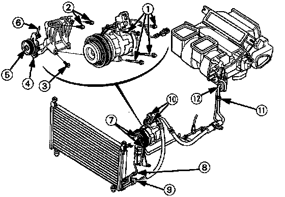

Torque Specifications

Don't overtighten fittings; you could damage them. Leaks are caused by faulty 0-rings; overtightening won't stop them.
(1) Compressor mounting bolts: 25 Nm (2.5 kg-m, 18 lb-ft)
(2) Compressor bracket mounting bolts (1Ox30): 48 Nm (4.8 kg-m, 35 lb-ft)
(3) Compressor bracket mounting bolt (10 x 60): 48 Nm (4.8 kg-m, 35 lb-ft)
(4) Idler pulley bracket bolts (8 x 16): 35 Nm (3.5 kg-m, 25 lb-ft)
(5) Idler pulley center nut: 48 Nm (4.8 kg-m, 35 lb-ft)
(6) Adjusting bolts (8 x 115): 8 Nm (0.8 kg-m, 5.8 lb-ft)
(7) Receiver/dryer: 14 Nm (1.4 kg-m, 10 lb-ft)
(8) Condenser pipe to condenser: 14 Nm (1.4 kg-m, 10 lb-ft)
(9) Discharge hose to condenser: 22 Nm (2.2 kg-m, 16 lb-ft)
(10) Compressor hose mounting bolt: 22 Nm (2.2 kg-m, 16 lb-ft)
(11) Suction hose line: 33 Nm (3.3 kg-m, 24 lb-ft)